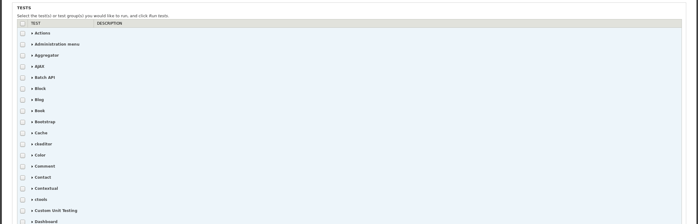
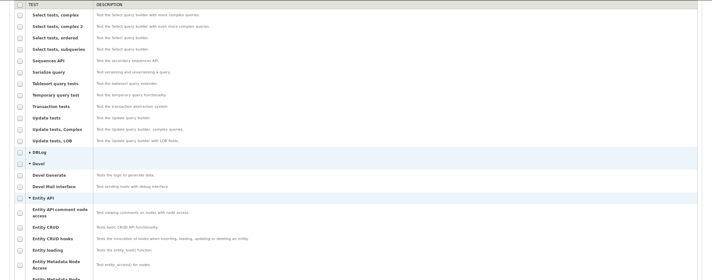

Test strategy
Testing is a crucial section of the development cycle, it is fundamental to the fact that we need to ensure what we deliver is a fully functioning platform. For this reason, we took the liberty of researching different Testing Frameworks. Drupal as you may have already guessed has its own set of testing modules that is geared towards functional testing instead of unit testing, hence tests are written in such a fashion that they test the whole interface instead of testing individual functions or sections of code. If you are reading this and favour unit testing in your test development cycle, we should emphasise that functional testing is as effective, if not yet still more suited than unit testing given the style of code used in our drupal version hence drupal is actually designed in such manner to favour functional testing. All in all, our platform is best suited to test using functional testing - however, we have also taken into account other forms of testing, as outlined below.
Drupal Test Module
This Testing module comes preinstalled with drupal as a core module, it is functional/integration testing oriental module. This testing module/framework automatically creates a new sectioned-off environments for each test to run in. They create a fresh database installation for that environment and specifically create data for the test in the database and then make assertions based on expected results. Hence all tests have the original starting environment and there is no way tests can interfere with one another. More importantly, you do not have to consistently clean up your environment at the end of each test as each test creates its own environment . As you are not actually testing on production but entirely different instance of drupal with1(https://www.drupal.org/docs/7/testing/unit-testing-with-simpletest)its own environment.
Each isolated drupal instance is needed to ensure that each test can begin on the same "starting position." It also means that changes made to the local development environment will not be present in the testing environment and cannot be tested. While this module favours functional testing we added our own custom unit testing. Our Tests include the following tests Bootstrap-Theme , creating new content, creating new users, LDAP configuration, URL aliasing, database, system testing and many more.

Acceptance Testing
Selenium
Selenium IDE a Firefox add-on 1(https://www.seleniumhq.org/projects/ide/),that will do simple record-and-playback of interactions with the browser. The record function saves the history of your clicks in an HTML file containing a table with three columns and a row for each click. We created multiple tests and placed them in several test suites that test everything from content generation to user profile editing to searching to expert facility usage.
However, Selenium webdriver with codeception we believe is the most sustainable extendable option for acceptance testing for our site for future development which we have not yet implemented, the reason for this is that we believe our current testing strategy is inclusive and meets development standards for small drupal platform like ours, however if our client wishes to expand our platform we advise future development teams to use selenium webdriver with codeception, as Selenium IDE is being deprecated.
User Testing
As development progressed we asked various external users to use the platform, we provided a “story” 3(http://webservices.itcs.umich.edu/drupal/wwwsig/sites/webservices.itcs.umich.edu.drupal.wwwsig/files/Usability-Testing-Basics.pdf),on what the typical user would be able to do and explained who the key features worked. After each stage of testing we asked for a feedback on what can be improved, from this we implemented changes where necessary. We did this alongside our weekly client meeting who would view the platform and give us further feedback on how to improve the platform.
Responsive Design Testing
The following is our testing results using multiple devices to test responsive design and compatibility:
| Device Model | System Version | Screen Size | Result |
|---|---|---|---|
| iPhone 6 | IOS 8 | 375 * 667 | Successful |
| iPhone 6 Plus | IOS 8 | 414 * 736 | Successful |
| iPhone 7 | IOS 11 | 430 * 740 | Successful |
| iPad Pro | IOS 9 | 1024 * 1366 | Successful |
| Nexus 6P | Android 6.0 | 412 * 732 | Successful |
| Galaxy S5 | Android 4.4 | 360 * 640 | Successful |